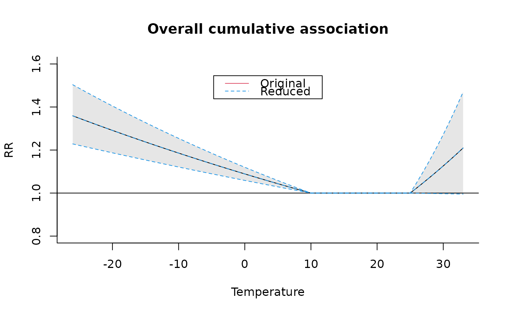
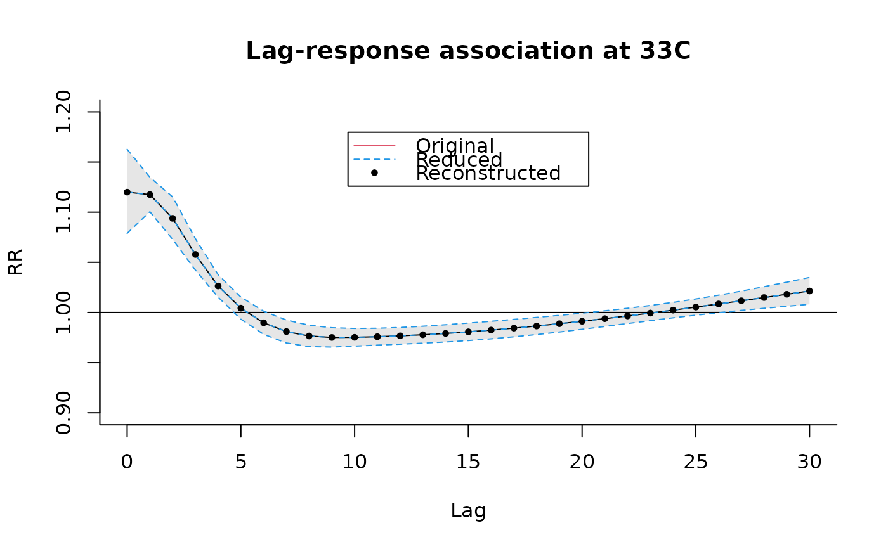

plot.crossreduce.RdHigh and low-level method functions for graphs of predictions from reduced distributed lag linear (DLMs) and non-linear (DLNMs) models.
an object of class "crossreduce".
type of confidence intervals representation: one of "area", "bars", "lines" or "n". Default to "area" in high level functions, "n" for low-level functions.
list of arguments to be passed to low-level plotting functions to draw the confidence intervals. See Details.
confidence level for the computation of confidence intervals.
logical. It forces the choice about the exponentiation. See Details.
optional graphical arguments. See Details.
Differently than for plotting functions for crosspred objects (see the method function plot for objects of class "crosspred"), the type of the plot is automatically chosen by the dimension and value at which the model has been reduced. Namely, the lag-specific association at the chosen lag value, the predictor-specific association at the chosen predictor value, or the overall cumulative association.
These methods allow a great flexibility in the choice of graphical parameters, specified through arguments of the original plotting functions. See plot.default, lines and points for information on additional graphical arguments. Some arguments, if not specified, are set to different default values than the original functions.
Confidence intervals are plotted for ptype equal to "overall" or "slices". Their type is determined by ci, with options "area" (default for plot), "bars", "lines" or "n" (no confidence intervals, default for points and lines). Their appearance may be modified through ci.arg, a list of arguments passed to to low-level plotting functions: polygon for "area", segments for "bars" and lines for "lines". See the original functions for a complete list of the arguments. This option offers flexibility in the choice of confidence intervals display. As above, some unspecified arguments are set to different default values.
For a detailed illustration of the use of the functions, see:
vignette("dlnmOverview")
Gasparrini A., Armstrong, B., Kenward M. G. Reducing and meta-analyzing estimates from distributed lag non-linear models.BMC Medical Research Methodology. 2013;13(1):1. [freely available here].
All the predictions are plotted using a reference value corresponding to the centering point for continuous functions or different values for the other functions (see the related help pages). This is determined by the argument cen in crossreduce. Exponentiated predictions are returned by default if x$model.link is equal to "log" or "logit".
onebasis to generate simple basis matrices. crosspred to obtain predictions after model fitting. crossreduce to reduce the fit ot one dimension.
See dlnm-package for an introduction to the package and for links to package vignettes providing more detailed information.
# create the crossbasis object
lagnk <- 3
lagknots <- exp(((1+log(30))/(lagnk+1) * seq(lagnk))-1)
cb4 <- crossbasis(chicagoNMMAPS$temp, lag=30, argvar=list(fun="thr",
thr=c(10,25)), arglag=list(knots=lagknots))
# # run the model and get the predictions
library(splines)
model4 <- glm(death ~ cb4 + ns(time, 7*14) + dow, family=quasipoisson(),
chicagoNMMAPS)
pred4 <- crosspred(cb4, model4, by=1)
# reduce to overall cumulative association
redall <- crossreduce(cb4, model4)
summary(redall)
#> REDUCED FIT
#> type: overall
#> dimension: predictor
#> reduced df: 2
#>
#> BASIS:
#> fun: thr
#> thr.value: 10 25
#> side: d
#> intercept: FALSE
#>
#> PREDICTIONS:
#> range: -26 to 33
#> values: 60
#> exponentiated: yes
#>
# reduce to exposure-response association for lag 5
redlag <- crossreduce(cb4, model4, type="lag", value=5)
# reduce to lag-response association for value 33
redvar <- crossreduce(cb4, model4, type="var", value=33)
# compare number of parameters
length(coef(pred4))
#> [1] 10
length(coef(redall))
#> [1] 2
length(coef(redlag))
#> [1] 2
length(coef(redvar))
#> [1] 5
# test
plot(pred4, "overall", xlab="Temperature", ylab="RR",
ylim=c(0.8,1.6), main="Overall cumulative association")
lines(redall, ci="lines",col=4,lty=2)
legend("top",c("Original","Reduced"),col=c(2,4),lty=1:2,ins=0.1)

# reconstruct the fit in terms of uni-dimensional function
b4 <- onebasis(0:30,knots=attributes(cb4)$arglag$knots,intercept=TRUE)
pred4b <- crosspred(b4,coef=coef(redvar),vcov=vcov(redvar),model.link="log",by=1)
# test
plot(pred4, "slices", var=33, ylab="RR", ylim=c(0.9,1.2),
main="Lag-response association at 33C")
lines(redvar, ci="lines", col=4, lty=2)
points(pred4b, pch=19, cex=0.6)
legend("top",c("Original","Reduced","Reconstructed"),col=c(2,4,1),lty=c(1:2,NA),
pch=c(NA,NA,19),pt.cex=0.6,ins=0.1)
